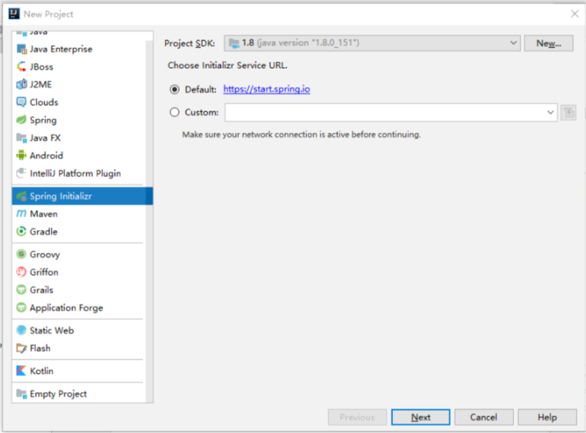
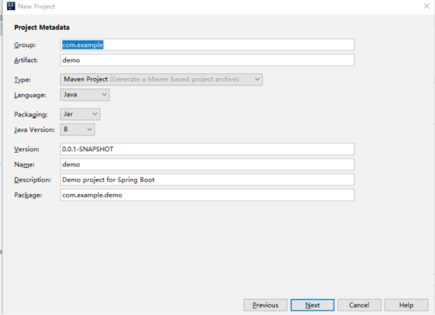
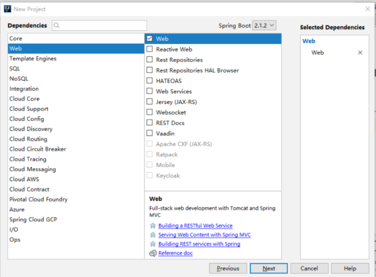
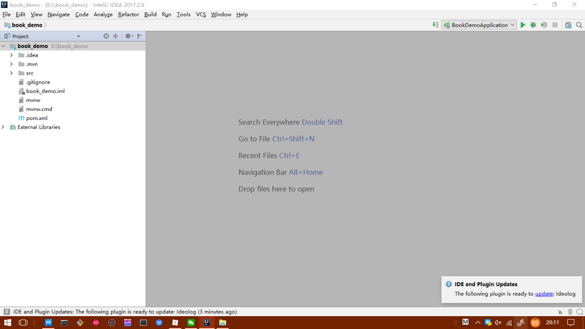
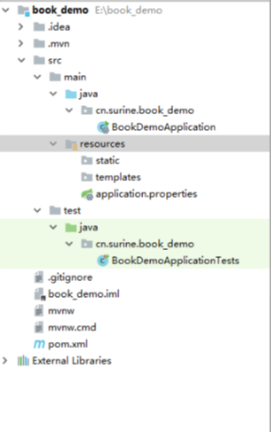
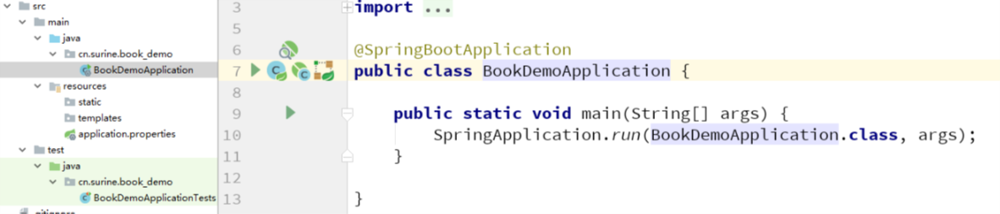
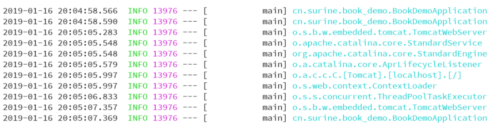
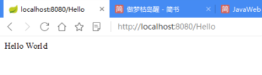

2.构建新项目
经过前面的一些介绍，我想你们一定跃跃欲试了，那让我们来建立一个SpringBoot工程看看吧！
准备工作
请确保Java环境和Idea安装完成。
创建项目有两种方法，一种是访问spring官网进行工程下载，但是毕竟是麻烦的，这里就不说了。
我们要提的就是用Idea自动建立项目来做。
一. 创建Hello World
打开Idea，新建一个项目（File -> New -> Project）

我们可以看到，我们现在选择的是Spring Initializr，界面上显示Choose Initializr Service URL，也就是初始化连接，
我们看到默认是spring.io的链接，这个我们不用动，因为Idea在背后已经帮我们去下载了项目包。
我们点击Next。

我们挨个来看，每一个都是什么意思，当然 这些都可以默认，你完全可以不用管这些内容，或者你可以粗略的看看下面这部分内容。
- Group： 公司域名倒置，没域名的宝宝可以随便写了，你可以自己编一个，我的域名是surine.cn,所以我就会写cn.surine,这个名字会被当作包名的前一部分，我们可以在最下面一行Package看到。 至于为什么要填这个，主要是为了区分项目包名，因为域名是唯一的，可以当作唯一标识
- Artifact： 这个就是项目名了，大写可能会提示不合法，尽量小写 起名真的好难好难好难……
- Type： 选择您的项目所属的类型，这主要是由你自己的喜好来决定，有的人对Maven很熟悉，有的人对Gradle很熟悉，我一般都默认。
- Language： 编程语言，Java 咯，当然你喜欢Kotlin也可以用Kotlin
- Packaging： 项目打包方式，默认即可，项目中可以改
- Java Version： 默认即可
- Version： 默认即可
- Description： 描述，随便写就可以啦。
- 剩下两个，不说了 （是不是有点逼死强迫症啊……）
下一步。

这里是一些依赖，我们可以在默认建立时候就选上自己需要的，我一般会选Web里的Web选项，系统会帮我们自动配置一些东西，省的我们一会还要重新配置。
选择项目储存位置的地方自己选即可。
选择next就可以建立新项目了（弹窗提醒新窗口显示项目或者当前窗口，根据你自己的需求选择即可）

新项目的结构我们可以看图，这里我也不多做介绍了，因为有些文件夹，或者文件，我们碰都不会碰一下，所以我们干脆不说。我们下面只说src（项目主目录），pom.xml (依赖库管理文件)，我们暂时只用这两个，其他的，我们遇到再看。
另外温馨提示一下：尽量要等IDE底部的进度条结束之后再进行下一步操作，防止出现一些各种各样的问题，当然用过Idea系列IDE的童鞋也知道，下载或者编译都是个非常耗时的工作，所以不如趁他下载的时候去刷刷段子啥的。
二. 启动项目
在启动项目之前，我们先看一下src下面的组织

src下分为main和test两个目录，其中main目录下面是工程核心部分，test是用于测试的部分。
main中主要是java部分和resources部分，其中前者是后端核心部分，后者是前端核心部分，比如说我们的前端js或者图片文件放在static中，模板文件放在templates中，对于属性配置系列，我们可以放在application.properties中。
文件结构就先介绍到这，我们现在正式启动项目，我们先看xxxxxApplication这个文件。

Application是Spring Boot框架中描述Spring应用的类，它的run()方法会创建一个Spring应用上下文（Application Context）。
此外它会扫描当前应用类路径上的依赖，来判断这是一个什么样类型的应用，比如说现在我们建立的Web应用，那么SpringBoot知道之后，将会启动一个内嵌的Servlet容器（默认是Tomcat）用于处理HTTP请求。
我们点击main方法前面对应的绿色的箭头即可运行。如果看到最后一行提示项目启动成功就证明启动成功了，不过现在我们看不到任何效果，因为我们什么都没写，我们有的，也仅仅是Application这个类，这个类里有一个main方法，控制着整个项目的启动过程。

下面我们写一个Hello World。
三.编写第一个Controller
核心代码如下，我这里在Application同级新建了一个Controller目录，并在里面新建了HelloController类，类中提供了一个getHello方法，无参数传入，但是返回了一个字符串。
在方法上面，我们加了一个RequestMapping，通过在浏览器访问 /Hello 我们可以调用这个方法，从而返回结果，
1 |
|
Spring WebMvc框架会将Servlet容器里收到的HTTP请求根据路径分发给对应的@Controller类进行处理，@RestController是一类特殊的@Controller，它的返回值直接作为HTTP Response的Body部分返回给浏览，这段话的理解是这样的，我们使用的SpringBoot是基于MVC架构，C为控制层，我们在容器里执行的http请求（就是浏览器打链接回车的动作）最终会分发给对应的C去处理，C处理完return的String将作为HTTP Response的Body部分,那么浏览器显示了Body部分，会如我们稍后所看到的截图内容。
@EnableAutoConfiguration是自动配置选项，暂且我们可以先不用理解
@RequestMapping注解表明该方法处理那些URL对应的HTTP请求，也就是我们常说的URL路由（routing)，请求的分发工作是有Spring完成的。那么我们上面代码所描述的，通过/Hello来访问它，如果我们试图访问一个不存在的url会提示404。
我们点击运行，当然，由于我们刚才已经运行一遍了，我们可以直接点击IDE右上角的运行按钮，当然如果不成功的话，可以自行搜索错误并配置IDE的启动项，如果搜索无果，你依然可以用刚才我们用过的运行方法。
如果当前已经运行项目，可以点击停止并重新启动。
同样我们看到上面我所提到的运行成功日志后，我们打开浏览器，输入localhost:8080/Hello，其中8080是我们的端口号
我们运行后，会在浏览器看到如下结果：

恭喜你，如果你看到如上结果，说明你的第一个接口写好了，你已经迈出了一大步了！
What？你可能会嘲笑我了，这就Hello World ，怎么就一大步了，别急，下面我们深入探究一下。